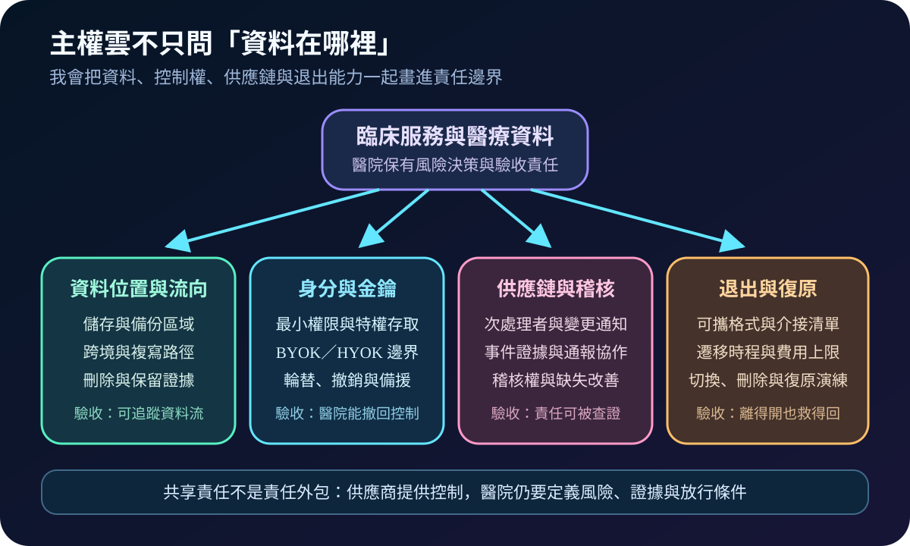
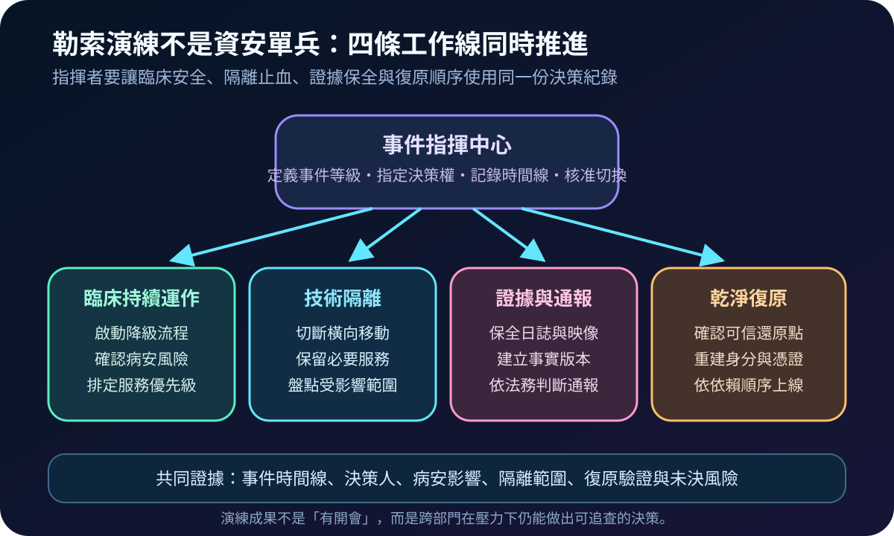
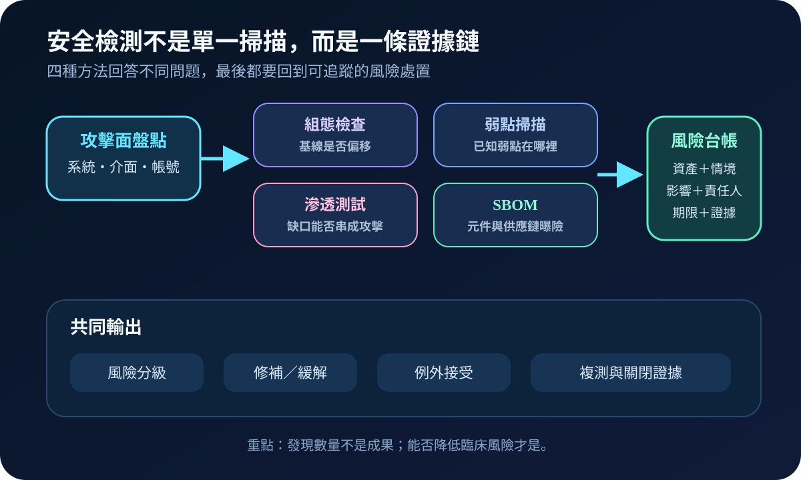
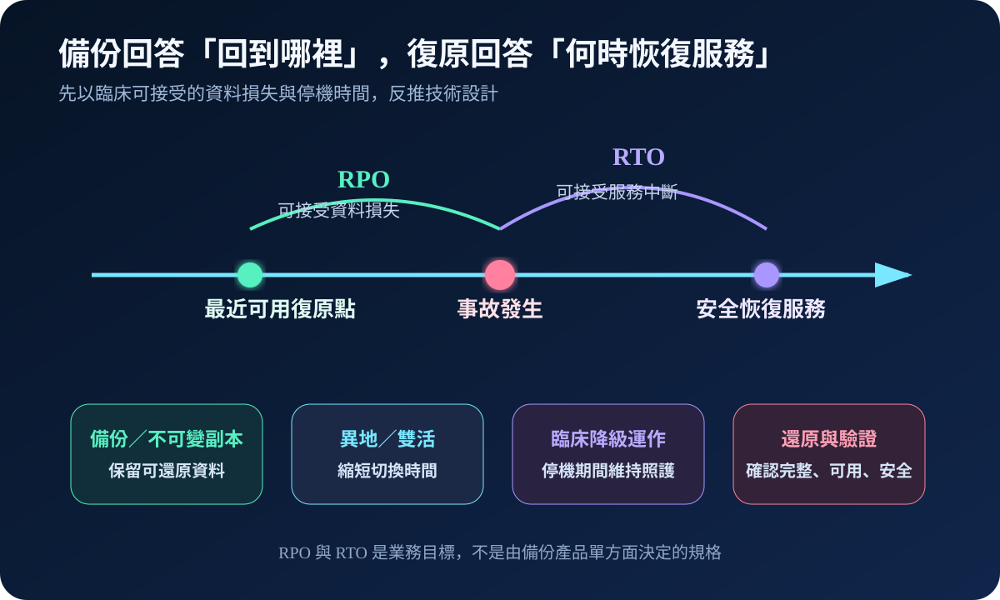
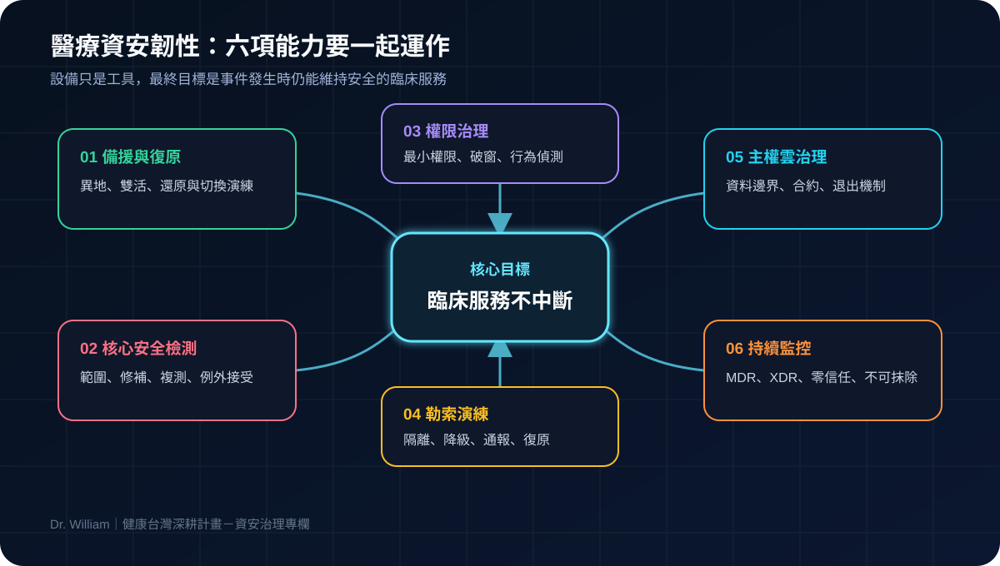

2026-08-18 · 六項能力 05
醫療主權雲不是資料放國內：從契約控制到可退出驗收
我用三張圖拆解資料流向、BYOK／HYOK、次處理者、稽核權與退出演練，讓主權雲成為可驗收的治理能力。
閱讀全文 →Health Taiwan · Cybersecurity Governance
我會從醫療資訊、資安治理與 AI Agent 的實務經驗出發，用更短的文字、更多圖解，整理醫院如何把備援、權限、資料保護與 AI 風險管理真正落地。
LATEST ARTICLES
用圖解累積可落地的治理知識庫。

我用三張圖拆解資料流向、BYOK／HYOK、次處理者、稽核權與退出演練，讓主權雲成為可驗收的治理能力。
閱讀全文 →

我用三張圖串起身分、角色、情境、特權與異常監測，建立可撤回、可追查的權限治理閉環。
閱讀全文 →


我用三張圖整理備援、權限、勒索演練、主權雲、MDR／XDR 與 AI Agent 治理，快速看懂如何守住臨床服務。
閱讀全文 →